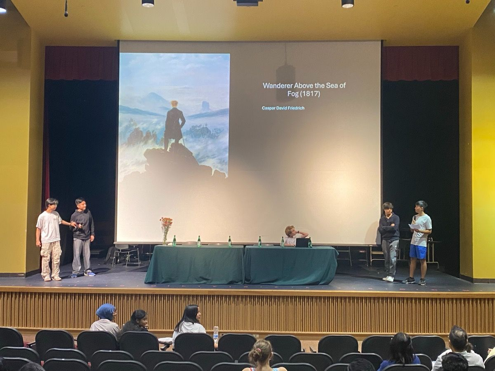
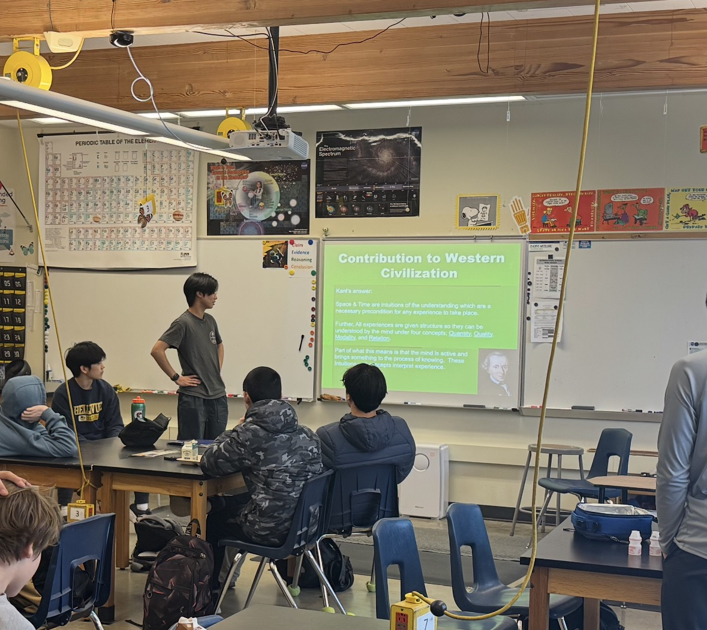
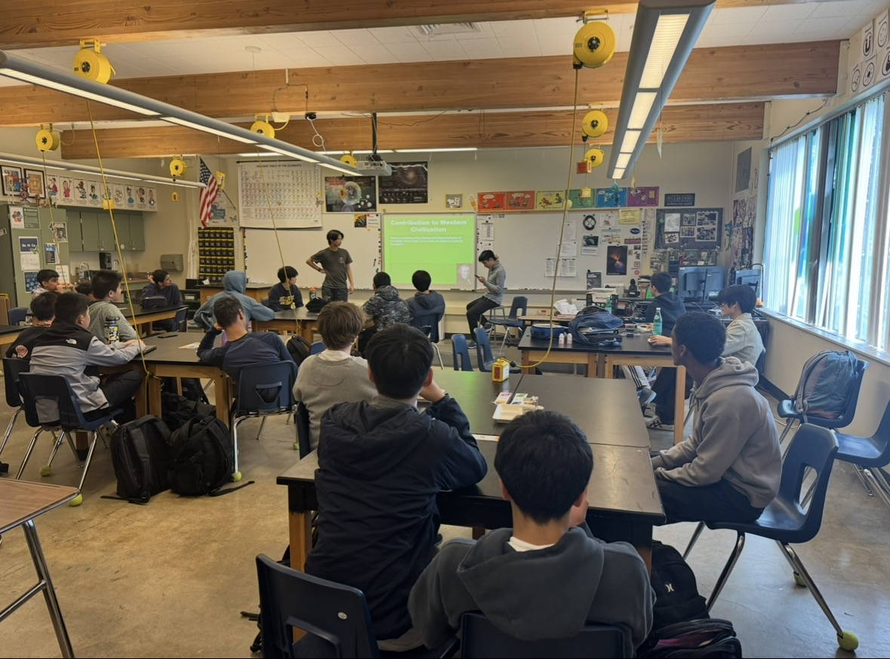

June 5, 2025
Moral Implications of Synthetic Intelligence
Ethics of AI, STEM Fair, International School
Artificial Consciousness & Personhood: Subjective experience is what it feels like to be something. It is central to debates about machine consciousness and mind. Can AI really feel, or just simulate feeling?
Existential & Ethical Risk: As artificial systems grow more capable, the questions shift from theoretical to urgent. What obligations do we have toward synthetic minds, and what risks do they pose to us?
Access the Presentation →Closing Question: As Michelangelo captured the divine spark between God and man, today we stand at a similar threshold, but we are in the role of creator. If we breathe consciousness into artificial minds, what responsibilities come with that act? Are we gods, parents, engineers, or something else entirely?


March 23, 2025
Reason, Knowledge, and the Structure of Experience: An Introduction to Kant
Philosophy of Mind & Epistemology, International School
The Limits of Human Knowledge: Kant argued that our minds do not passively receive the world — they actively shape it. Space, time, and causality are not features of reality we discover, but frameworks the mind imposes on experience.
Logic and the Categorical Imperative: From the structure of rational thought to the foundation of moral duty, this lecture traced how Kant built an entire ethical system from the laws of reason alone.
Access the Kant Toolkit →ESP Live & ESP Lectures
Past guest speakers, live discussions, and lecture events will be showcased here as they happen. Stay tuned.
ESP Lecture
Moral Implications of Synthetic Intelligence
June 5, 2025, International School STEM Fair
ESP Lecture
Reason, Knowledge, and the Structure of Experience: An Introduction to Kant
March 23, 2025, International School